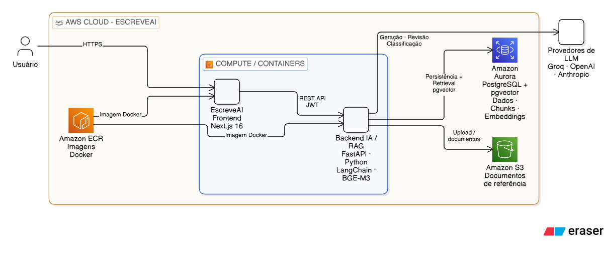
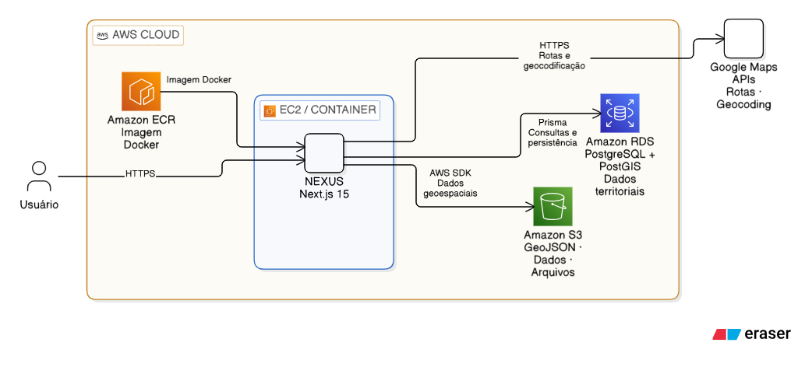
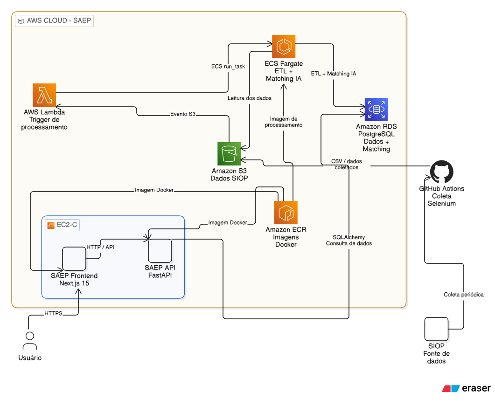
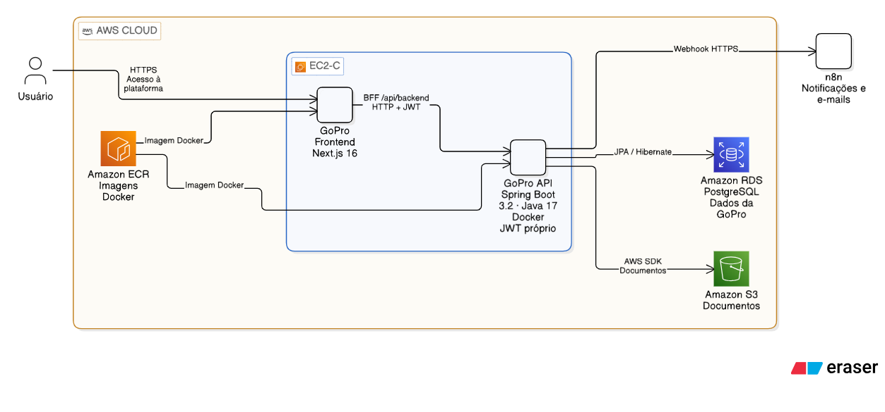

Relatório técnico
Arquitetura, dados e infraestrutura para orientar a evolução do portfólio.
O portfólio mapeado reúne 16 plataformas e conjuntos de serviços que sustentam gestão interna, inteligência de oportunidades, relacionamento com a comunidade, produção editorial, elaboração de projetos com IA e acesso corporativo. Desse total, 14 compõem o portfólio regular e 2 estão em desenvolvimento no Programa de Estágio — Painel Instituições / Central de Inteligência Institucional e Monitoramento de Faturamento. O Hub referencia também o Cronograma Inovação, cuja arquitetura permanece a complementar. Os sistemas do portfólio regular estão organizados em 15 repositórios, com alguns projetos sendo monolitos e outros com divisões mais claras com sepração do back-end e do fornt-end, como o sistema da GoPRO e a EscreveAI.
A base predominante das interfaces é React com Next.js e TypeScript. Há dois frontends React/Vite, APIs Python/FastAPI, duas APIs Java/Spring Boot e um ETL Python sem interface web. PostgreSQL é a principal tecnologia de persistência. A EscreveAI documenta, no repositório, uma base de conhecimento em Aurora do RDS com recuperação completa por RAG, distinta do RDS corporativo. O Esplanada 4.0 introduz DynamoDB, e Google Sheets é uma fonte operacional relevante para indicadores e integrações comerciais.
A infraestrutura documentada utiliza principalmente Docker em AWS EC2, imagens no ECR e bancos no RDS e o banco de dados do Aurora. A SAEP também possui processamento em ECS Fargate acionado por Lambda a partir de eventos S3. Parte das coletas é executada no GitHub Actions, fora do ambiente computacional AWS.
A identidade é uma dependência transversal: o Hub e seu broker OIDC, o Amazon Cognito e o cadastro compartilhado de usuários em PostgreSQL participam da evolução para autenticação centralizada. A transição para SSO mantém caminhos legados e híbridos, enquanto o GoPro possui autenticação própria. Essa coexistência aumenta o esforço para administrar permissões, revogação e experiência de acesso entre produtos.
Os pontos abaixo consolidam os principais achados técnicos que exigem direcionamento, padronização ou priorização em nível de gestão.
| Tema | Situação técnica | Implicação para decisão |
|---|---|---|
| Identidade | Hub/broker, Cognito e PostgreSQL compartilhado atendem vários produtos | Formalizar identidade como serviço corporativo |
| Infraestrutura | Aplicações compartilham EC2; a SAEP separa processamento em Fargate | Avaliar maior isolamento entre workloads críticos |
| Dados | Predomínio de PostgreSQL, com vários ORMs e acesso compartilhado ao cadastro de usuários | Definir ownership e governança de dados |
| Stack | React/Next domina o frontend; Python atende dados/IA — inclusive o RAG da EscreveAI — e Java atende APIs de gestão | Padronizar runtimes, deploy e observabilidade |
| Informação gerencial | Indicadores depende de Sheets; SAEP e Editais dependem de ingestão e processamento | Monitorar qualidade e atualização dos dados |
| Capacidade de entrega | CI existe em parte do portfólio; procedimentos de publicação EC2 são majoritariamente manuais | Padronizar CI/CD, rollback e promoção de versões |
| Evolução de produto | GoPro tem módulos parciais; Esplanada tem infraestrutura ainda em implantação | Priorizar estabilização antes de novas funcionalidades |
| Capacidade | Plataformas | Relação com o negócio |
|---|---|---|
| Acesso e administração corporativa | Hub e Admin Console | Controlam entrada, usuários e permissões de outros produtos |
| Inteligência territorial, prospecção de recursos e oportunidades | Nexus, SAEP, Central de Editais e Esplanada | Organizam território, recursos públicos, editais e estrutura governamental |
| Gestão e acompanhamento | GoPro, Indicadores, DBEM e Innova Coin | Apoiam execução de contratos, metas, análise gerencial e bonificações |
| Relacionamento e submissões | Comunidade InnovaNation | Recebe inscrições e documentos e conduz avaliação de propostas |
| Produção de conteúdo | Innova Books e EscreveAI | Transformam relatórios em entregáveis editoriais e apoiam a redação de projetos com IA |
| Integração comercial | Pipedrive → Sheets | Alimenta a operação comercial por sincronização automatizada |
O agrupamento representa capacidades de negócio. Sistemas no mesmo grupo não necessariamente trocam dados entre si: Nexus, SAEP e Editais, por exemplo, compartilham propósito de inteligência, mas possuem fluxos e modelos de dados próprios.
Além das dependências internas de cada plataforma, o portfólio possui componentes e serviços cujo impacto ultrapassa um único sistema. Essas dependências representam pontos de acoplamento transversal: uma indisponibilidade, alteração de configuração, mudança de schema ou falha operacional pode afetar simultaneamente diferentes produtos ou comprometer funções relevantes mesmo quando a aplicação permanece acessível.
O quadro abaixo consolida as dependências com maior alcance identificadas no levantamento, seus principais efeitos técnicos e as decisões de governança associadas.
| Dependência | Produtos afetados | Efeito de falha ou mudança | Decisão associada |
|---|---|---|---|
| Identidade e autorização central | Hub, Admin e plataformas integradas | Interrupção de login, perda de continuidade da sessão ou inconsistência de permissões | Definir disponibilidade, gestão de mudanças e política de saída do modo legado |
| Cadastro PostgreSQL compartilhado | Administração, autenticação e permissões específicas | Uma alteração de schema pode afetar consumidores em várias linguagens | Estabelecer dono do schema, compatibilidade e coordenação das migrations |
| Hosts EC2 compartilhados | Grupos de aplicações descritos na seção 6 | Manutenção, saturação ou falha do host pode afetar vários serviços | Dimensionar e isolar a partir de carga e criticidade, não apenas do número de sistemas |
| Fontes externas e pipelines | SAEP, Editais, Esplanada, Indicadores, ETL comercial e EscreveAI | Dados defasados ou contexto de geração indisponível mesmo com site disponível | Definir indicadores de atualização, alertas e reprocessamento |
| Provedores de LLM e base RAG | EscreveAI | Indisponibilidade de Gemini/Groq ou da base Aurora do RDS interrompe geração e consulta de contexto | Confirmar modelos, persistência e critérios de operação antes de tratar o pipeline como definitivo |
| Serviços de arquivos e documentos | Comunidade, GoPro, Books, Nexus e a base documental da EscreveAI | Perda de acesso a anexos ou insumos de negócio | Definir retenção, recuperação e autorização por tipo de documento |
| Provedores de IA e análise | Books, Editais, DBEM e EscreveAI | Funções específicas dependem de serviço externo, cotas e configuração | Atribuir responsabilidade por contas, consumo e continuidade funcional |
O alcance técnico de uma dependência não deve ser interpretado automaticamente como prioridade de negócio. A classificação final deve combinar impacto técnico, quantidade de processos afetados, criticidade das operações atendidas, tolerância à indisponibilidade e capacidade de recuperação. A prioridade de cada plataforma deve, portanto, ser validada conjuntamente com a diretoria e os responsáveis de negócio, e não inferida apenas a partir da stack, do tamanho do sistema ou da quantidade de dependências.
O inventário abaixo consolida os sistemas identificados no portfólio da Innovatis, seus respectivos repositórios, finalidade principal, estrutura de aplicação e mecanismo predominante de persistência. O objetivo desta visão não é apenas registrar tecnologias, mas evidenciar padrões recorrentes de arquitetura, dependências compartilhadas e exceções relevantes entre as plataformas.
A maior parte do portfólio é composta por aplicações web com frontend em React/Next.js e serviços de backend integrados na própria aplicação ou separados em APIs Python/FastAPI e Java/Spring Boot. PostgreSQL é a tecnologia de persistência predominante, enquanto S3, Google Sheets, DynamoDB e bases especializadas aparecem conforme a natureza de cada produto. Essa composição já é apontada na visão executiva do relatório.
| Sistema / conjunto | Repositório ou diretório | Finalidade | Estrutura principal | Persistência principal |
|---|---|---|---|---|
| Hub Innovatis + autenticação central | hub-innovatis | Portal de acesso, catálogo por permissões, sessões e broker OIDC | Next.js + serviço Express/OIDC + Lambdas + Terraform | PostgreSQL compartilhado; Cognito para identidade |
| Admin Console | Admin-Console | Administração de usuários, convites, permissões geográficas e atividade | Next.js full-stack | PostgreSQL/PostGIS; S3 |
| Nexus | projeto-nexus | Inteligência territorial, municípios, polos, relacionamentos e rotas | Next.js full-stack, mapas e processamento no navegador | PostgreSQL/PostGIS; arquivos no S3 |
| SAEP | saep | Análise de emendas parlamentares e classificação de oportunidades | Next.js + FastAPI + coleta + processamento em lote | PostgreSQL; S3 como entrada do pipeline |
| DBEM | dbem | Acesso autenticado a dashboards Power BI | React/Vite + Spring Boot | PostgreSQL de usuários; Power BI externo |
| GoPro | gopro-completo/projet-gopro2 e gopro-completo/api_gopro | Gestão de contratos, projetos, execução financeira e documentos | Next.js/BFF + Spring Boot | PostgreSQL próprio; storage configurável |
| Indicadores 2026 | indicadores_2026 | KPIs corporativos, metas e funil comercial | Next.js full-stack | Google Sheets; PostgreSQL no fluxo de identidade |
| Comunidade InnovaNation | lp-comunidade | Inscrições, propostas de edital e avaliação administrativa | Next.js full-stack | PostgreSQL de produto e de identidade; S3 em fluxos de arquivos |
| Innova Coin | innova-coin | Acompanhamento de bonificações de heads e colaboradores | Next.js full-stack | PostgreSQL: usuários e parcelas |
| Innova Books | innova-books | Conversão de relatórios PDF em ebooks e exportação | React/Vite + FastAPI + IA | PostgreSQL para autenticação; S3 opcional |
| Central de Editais | prosas-teste | Coleta de editais, monitoramento, classificação e similaridade | Next.js + FastAPI + worker + serviço de similaridade | PostgreSQL de produto e de usuários |
| Esplanada 4.0 | esplanada-4.0 | Organograma federal e consolidação de fontes públicas | Monorepo pnpm: Next.js, handlers TypeScript, sync Python, CDK | DynamoDB; integração de credenciais produtivas ainda pendente no adaptador inspecionado |
| Integração Pipedrive → Sheets | api-pipedrive-gv | Sincronização comercial diária | CLI/ETL Python | Google Sheets como destino; sem banco próprio identificado |
| EscreveAI | escreve-ai | Elaboração e redação de projetos com IA e RAG sobre projetos já executados | Monorepo: Next.js (apps/escreve-ai) + FastAPI (apps/backend-ia) | Aurora do RDS com recuperação via similaridade do cosseno |
| Cronograma Inovação | Repositório não localizado | Plataforma referenciada no catálogo do Hub | Não verificado | Não verificado |
Nomes que podem induzir a erro: api-pipedrive-gv é um ETL de linha de comando, não uma API web; prosas-teste contém a Central de Editais com arquitetura e implantação documentadas; lp-comunidade contém fluxos transacionais além da landing page. Innova Coin implementa bonificações em banco relacional; não foi encontrada arquitetura de blockchain nos componentes inspecionados.
O inventário não possui o mesmo grau de completude para todos os produtos. O caso mais evidente é o Cronograma Inovação, cujo repositório, stack, persistência e hospedagem ainda não foram verificados. Essas lacunas devem permanecer explicitamente registradas para evitar que ausência de evidência seja interpretada como ausência de infraestrutura ou de dependências.
Versões de frameworks e bibliotecas consolidadas a partir dos arquivos de dependências. A coluna runtime descreve a configuração de empacotamento das aplicações; detalhes metodológicos estão no anexo.
| Componente | Versão do pacote | Framework resolvido | React resolvido | TypeScript resolvido | CSS principal | Runtime/build declarado |
|---|---|---|---|---|---|---|
| Hub | 0.1.0 | Next 15.4.3 | 19.1.0 | 5.8.3 | Tailwind 4.1.11 | Node 20 Alpine |
| Broker do Hub | 0.1.0 | Express 5.2.1; oidc-provider 9.12.0 | — | 5.9.3 | — | Node 20 Alpine; execução TS via tsx |
| Admin Console | 2.1.0 | Next 15.4.10 | 19.1.0 | 5.8.3 | Tailwind 4.1.12 | Node 20 Alpine |
| Nexus | 0.1.0 | Next 15.4.10 | 19.2.3 | 5.8.3 | Tailwind 4.1.6 | Node 20 Alpine |
| SAEP frontend | 0.1.0 | Next 15.3.3 | 19.1.0 | 5.8.3 | Tailwind 4.1.8 | Node 20 Slim |
| DBEM frontend | 0.0.0 | Vite 7.2.6 | 19.2.1 | 5.9.3 | Tailwind 3.4.18 | Build Node 20; arquivos estáticos via Nginx |
| GoPro frontend | 0.1.0 | Next 16.0.10 | 19.2.1 | 5.9.3 | Tailwind 4.1.17 | Node 20.18.1 Alpine |
| Indicadores | 2.0.0 | Next 15.5.6 | 19.2.0 | 5.9.3 | Tailwind 3.4.18 | Node 18 Alpine |
| Comunidade | 0.1.0 | Next 15.5.20 | 19.1.0 | 5.8.3 | Tailwind 4.1.11 | Node 20 Alpine |
| Innova Coin | 0.1.0 | Next 16.2.1 | 19.2.4 | 5.9.3 | Tailwind 4.2.2 | Node 20 Alpine |
| Innova Books frontend | 0.0.0 | Vite 8.0.10 | 19.2.5 | Não declarado | CSS da aplicação | Build Node 22; Nginx 1.27 Alpine |
| Central de Editais web | 0.1.0 | Next 16.2.9 | 19.2.4 | 5.9.3 | Tailwind 4.3.1 | Node 22 Alpine |
| Esplanada web | 0.1.0 | Next 15.5.23 | 19.2.8 | 5.9.3 | CSS da aplicação | Node >=20; pnpm 9.15.0 |
| EscreveAI frontend | — | Next 16.2.3 (App Router / Turbopack) | 19 | TypeScript declarado | Tailwind 4; shadcn/ui | apps/escreve-ai; empacotamento produtivo a confirmar |
Observações de versionamento:
Indicadores declara Next ^15.1.3, mas resolve 15.5.6; o número declarado não deve ser usado como versão exata.
Esplanada declara Next ^15.1.0, mas resolve 15.5.23.
DBEM utiliza React 19.2.1 no lockfile, apesar do README mencionar React 18. react e react-dom não aparecem como dependências diretas no manifesto inspecionado; estão resolvidos na árvore de dependências.
Há Next 15 e 16, Tailwind 3 e 4 e imagens Node 18, 20 e 22. Não existe uma baseline única de runtime no portfólio.
A diversidade de versões amplia a matriz de testes e manutenção. Uma política de atualização deve considerar compatibilidade das aplicações, dependências nativas e requisitos de cada runtime.
As camadas de backend, processamento e automação apresentam maior heterogeneidade tecnológica do que o frontend do portfólio. Enquanto Java/Spring Boot aparece nas APIs de gestão e autenticação de GoPro e DBEM, Python concentra os workloads de dados, inteligência artificial, coleta, processamento em lote e integrações externas. TypeScript também aparece na camada de infraestrutura do Esplanada 4.0 por meio do AWS CDK.
Essa composição reflete necessidades distintas de domínio, mas amplia a matriz operacional: runtimes, estratégias de empacotamento, mecanismos de gerenciamento de dependências e bibliotecas críticas variam entre os sistemas. A tabela a seguir consolida os principais componentes identificados.
| Componente | Linguagem/runtime | Framework e bibliotecas relevantes | Gestão de dependências |
|---|---|---|---|
| GoPro API | Java 17; Maven 3.9.9 no build | Spring Boot 3.2.0; JPA/Hibernate; Flyway; Spring Security; JJWT 0.12.6; AWS SDK Java 2.25.39; Springdoc 2.5.0 | Versões explícitas no POM; dependências gerenciadas pelo Spring não resolvidas nesta auditoria |
| DBEM API | Java 17 no POM e imagem unificada; Dockerfile isolado usa Java 21 | Spring Boot 3.2.0; JPA; Security; JJWT 0.11.5; Nimbus JOSE JWT 9.37.3; Springdoc 2.6.0 | Existem duas estratégias Docker com runtimes diferentes |
| SAEP API | Python 3.9 no Dockerfile | FastAPI 0.104.1; Uvicorn 0.24.0; SQLAlchemy 2.0.23; Pydantic 2.5.0; boto3 1.34.0; bcrypt 5.0.0 | Pins e intervalos em requirements.txt; dependências completas não congeladas |
| SAEP processamento | Base Lambda Python 3.9; coleta Actions Python 3.11 | PyTorch, Transformers, Sentence Transformers, scikit-learn; Selenium 4.23.1 na coleta | Runtime e dependências variam entre coleta, API e processamento |
| Innova Books API | Python 3.12 | FastAPI 0.115.5; Uvicorn 0.32.1; boto3 1.35.0; python-jose 3.3.0; bcrypt 4.2.0; OpenAI >=1.50.0; PyMuPDF >=1.25.0; psycopg >=3.2,<4 | Mistura de pins e intervalos |
| Central de Editais API | Python 3.12 | FastAPI >=0.115.0; Uvicorn >=0.32.0; psycopg >=3.2.0; PyJWT >=2.9.0; bcrypt >=4,<4.1 | Sem lockfile Python equivalente ao npm encontrado nos manifestos analisados |
| Central de Editais worker/coleta | Python 3.12 | Playwright >=1.40; BeautifulSoup >=4.12; Sentence Transformers >=3; Anthropic >=0.116; python-docx >=1.2 | Intervalos abertos; CI e Docker instalam requirements |
| Central de Editais similaridade | Python 3.12 | NumPy >=1.26; psycopg >=3.2; servidor HTTP da biblioteca padrão | Serviço separado; não é outra API FastAPI |
| Esplanada sync | Python >=3.12 | requests >=2.32; orcamentobr >=1.0.1; boto3 >=1.35 | pyproject.toml |
| Esplanada infraestrutura | TypeScript | aws-cdk-lib 2.265.0; CLI aws-cdk 2.1137.0; Vitest 2.1.9 | Lockfile pnpm; biblioteca e CLI têm versões distintas |
| EscreveAI backend-ia | Python; Uvicorn na porta 8000 | FastAPI; embeddings BAAI/bge-m3 (FlagEmbedding); TokenTextSplitter/tiktoken; BM25 + Aurora AWS; Claude e OpenAI; Llama 3.1 8B Instant via Groq | Documentação e dependências em apps/backend-ia; lockfile equivalente ao npm não destacado nesta versão |
| Pipedrive → Sheets | Python 3.12 no Actions | requests >=2.32,<3; google-auth >=2.35,<3; Google API client >=2.150,<3; PyYAML >=6,<7; Tenacity >=9,<10 | Intervalos limitados por major; sem versão única resolvida registrada |
Dependências transversais: autenticação JOSE/OIDC e bcrypt; acesso PostgreSQL por pg, Prisma, Drizzle, psycopg, SQLAlchemy e JPA; AWS SDKs JavaScript/Python/Java; geração PDF por bibliotecas diferentes. Essa diversidade exige cuidado com contratos de dados e identidade, mesmo onde a interface usa a mesma stack.
Não há um monorepo corporativo único. Predominam repositórios independentes com camadas de UI e servidor reunidas no Next.js, além de serviços separados quando o domínio exige Python ou Java. O Esplanada é um monorepo de pacotes; o GoPro é um agrupamento operacional de dois repositórios. A EscreveAI é um monorepo com frontend em apps/escreve-ai e backend de IA em apps/backend-ia.
Admin Console administra o cadastro e as permissões corporativas. A transição híbrida preserva caminhos legados nas plataformas integradas.
O diagrama apresenta a arquitetura lógica de acesso. Esplanada e o ETL não integram o contrato central descrito; o GoPro possui autenticação própria.
A identidade corporativa constitui uma dependência transversal do portfólio. O modelo atual combina Hub, broker OIDC, Amazon Cognito, persistência PostgreSQL e mecanismos próprios de sessão nas aplicações. Esse arranjo permite centralização progressiva da autenticação, mas ainda convive com fluxos legados e implementações híbridas em diferentes produtos.
Hub: portal, catálogo filtrado por permissões e sessão própria. O registro de 08/09 descreve Hub em modo broker.
Broker: Express com oidc-provider, endpoints OIDC, autenticação integrada ao Cognito, persistência PostgreSQL, introspecção de sessão, recuperação de senha e operações administrativas com reconciliação.
Cognito: provedor de identidade. Terraform e Lambdas mantêm recursos para clientes, migração de usuários e mensagens; os recursos declarados não substituem o inventário real da conta.
Cadastro corporativo: users, permissões platforms, papéis e vínculos de identidade. Permissões geográficas do Nexus e papéis específicos do Innova Coin coexistem com autorização geral.
Plataformas: mantêm cookies e validações próprios. Fluxos legacy, hybrid, Cognito direto e broker aparecem em implementações e registros de diferentes momentos.
GoPro: usuários e autorização próprios, sem client no contrato OIDC atual.
Dependência crítica: a disponibilidade do broker, do Cognito e do banco de identidade pode afetar login ou continuidade de sessão de vários sistemas. O impacto exato depende do modo de autenticação e da política de introspecção configurados em produção.
Transição ainda heterogênea: o registro operacional mais recente informa cutover híbrido de Admin, DBEM e Comunidade, mantendo legado. A auditoria de redirects/logout identifica caminhos que encerram somente a sessão da aplicação em alguns produtos. A decisão de concluir a centralização deve incluir revogação e logout cruzado, além do login único.
Fontes: estado do Hub, auditoria de redirects e logout, schema do broker, catálogo.
A EscreveAI representa a principal aplicação do portfólio voltada à elaboração assistida de projetos com inteligência artificial e recuperação de contexto. Sua arquitetura separa a interface de edição do pipeline de IA, permitindo que frontend e backend evoluam de forma relativamente independente, ao mesmo tempo em que mantém uma cadeia de dependências necessária para que a geração funcione de ponta a ponta.

Fluxo documentado no repositório: o frontend consome o backend de IA, que recupera contexto na base local e chama provedores externos. Host e modelos de produção permanecem a confirmar.
O frontend atua como camada de interação com o usuário e encaminha as solicitações para o backend de IA. Esse backend concentra o processamento responsável pela recuperação de contexto, preparação das entradas e comunicação com os modelos externos utilizados na geração.
A recuperação depende de uma base documental previamente indexada. No
estado documentado no repositório, o backend utiliza Aurora do RDS, além de embeddings
BAAI/bge-m3 e mecanismos de reranking. A geração principal
utiliza a api da Openai e Claude, enquanto o repositório também registra uso de
Llama 3.1 8B Instant via Groq em funções específicas para poder inferir títulos no pipeline de ingestão.
A infraestrutura documentada combina aplicações containerizadas em instâncias EC2 compartilhadas, serviços gerenciados da AWS e componentes executados fora da nuvem, como workflows do GitHub Actions. A topologia atual privilegia operação direta por meio de Docker, ECR e hosts EC2, enquanto workloads específicos utilizam serviços como ECS Fargate, Lambda, Cognito, RDS, S3 e DynamoDB.
A distribuição apresentada nesta seção consolida os registros operacionais de 31/08/2026 e 14/09/2026. As denominações EC2-A, EC2-B e EC2-C são identificadores lógicos adotados no relatório para facilitar a leitura e não necessariamente correspondem aos nomes reais dos recursos na conta AWS.
| Grupo lógico | Sistemas associados | Organização técnica | Implicação operacional |
|---|---|---|---|
| EC2-A — Hub e administração | Hub, auth-broker, Admin Console, DBEM e Comunidade | Serviços de identidade e aplicações no mesmo host | Manutenção e capacidade do host afetam tanto acesso corporativo quanto funcionalidades de produto |
| EC2-B — inteligência territorial e editais | Nexus e Central de Editais | Aplicação de mapas e conjunto de serviços de editais compartilham host | Considerar uso de memória da similaridade e execução de workers no dimensionamento conjunto |
| EC2-C — SAEP e GoPro | SAEP e GoPro | Aplicações web/API no host; batch SAEP separado em Fargate | A separação do batch permite tratar processamento e atendimento web como cargas distintas |
| Indicadores | Painel de KPIs | Publicação documentada na porta host 3006 → app 3000; instância a identificar | Disponibilidade da interface e atualização de Sheets são responsabilidades distintas |
| Books | Frontend Nginx e API Python | Runbook prevê mesma EC2, containers separados e rede Docker dedicada; instância a identificar | Geração longa e exportação exigem controle de concorrência e timeouts |
| Coin | Aplicação Next.js | Container Node; associação ao host a completar | Incluir a aplicação no mapa de capacidade, backup e monitoramento |
| Esplanada | DynamoDB e serviços preparados para serverless | CDK provisiona a tabela; implantação dos serviços permanece a completar | Avaliar prontidão operacional antes da expansão de uso |
| EscreveAI | Frontend Next.js e backend FastAPI de IA | O repositório traz Docker, pasta infra/ e scripts; host produtivo não confirmado | Não tratar a estrutura de nuvem do repositório como implantação já em operação |
Os registros operacionais disponíveis também permitem identificar parte das releases publicadas. Essas tags representam o estado registrado nas datas de referência e não constituem, por si só, um inventário completo de todos os serviços em produção.
| Serviço | Tag registrada | Data/contexto |
|---|---|---|
| Hub | 1.1.21 | Implantação de 08/09 |
| auth-broker | 1.0.3 | Implantação de 08/09 |
| Admin Console | admin-console:1.1.3 | Cutover híbrido de 08/09 |
| DBEM | auth-back:1.0.4 | Cutover híbrido de 08/09 |
| Comunidade | landingpage:1.1.5 | Cutover híbrido de 08/09 |
| Central de Editais | central-editais-api/front:1.0.1, conforme nomenclatura do registro | Baseline de 31/08; não cobre todos os serviços |
| Indicadores | plataforma-indicadores:1.2.4 | Baseline de 31/08; container marcado unhealthy naquele registro |
O registro de unhealthy em Indicadores é histórico e foi associado à diferença entre bind do servidor e endereço do healthcheck. É um ponto de acompanhamento operacional, não uma afirmação de indisponibilidade atual.
A infraestrutura combina serviços de computação, persistência, identidade, armazenamento, execução de tarefas e gestão de credenciais. Nem todos os recursos possuem o mesmo nível de confirmação operacional: parte é observada em runbooks e registros de deploy, enquanto outros aparecem em infraestrutura como código ou componentes ainda em implantação.
| Serviço | Uso identificado | Sistemas / observação |
|---|---|---|
| EC2 | Hospedagem de aplicações em Docker | Topologia de hosts compartilhados documentada; imagens ARM64/Graviton nos registros |
| ECR | Distribuição de imagens | Presente nos runbooks de deploy; criação do repositório do broker registrada em 08/09 |
| RDS PostgreSQL | Identidade e bancos de produto | Identidade e domínios de negócio; separação física das instâncias a completar |
| S3 | Dados geográficos, arquivos e entrada de processamento | Nexus/Admin, SAEP, Books e fluxos da Comunidade |
| Cognito | Identidade e autenticação | Hub e plataformas integradas; legado preservado em modos híbridos |
| Lambda | Migração/mensagens Cognito e acionamento do processamento SAEP | Migração de usuários, mensagens e gatilho de tarefas |
| ECS Fargate | Processamento de emendas e matching em lote | s3_to_ecs_trigger.py usa run_task com launchType='FARGATE' |
| DynamoDB | Organograma, histórico e pendências Esplanada | Single-table declarada no CDK; uso produtivo não comprovado |
| Secrets Manager | Segredos de integração e autenticação | SDKs e Terraform no Hub/Admin; desenho Esplanada também o prevê |
| CloudWatch Logs | Logs da Lambda de migração | Log group da migração definido em Terraform |
| ACM | Certificado para domínio customizado Cognito | Declarado no módulo Terraform de User Pool |
| IAM / federação GitHub | Acesso a recursos AWS | Workflow SAEP usa OIDC para assumir role AWS |
Região de referência: us-east-1. A estratégia de recuperação entre regiões permanece a definir no inventário operacional.
Entrada HTTP: os runbooks de EC2 descrevem Nginx como proxy reverso e Certbot para TLS. Frontends Next normalmente usam servidor Node/standalone; DBEM e Books servem arquivos estáticos via Nginx. Portas de desenvolvimento, portas internas Docker e portas publicadas no host não são intercambiáveis.
Decisão de infraestrutura: a topologia descrita concentra a gestão de aplicações e proxy nos hosts EC2. Antes de ampliar a arquitetura, confrontar carga, disponibilidade exigida e esforço operacional. Cobertura por balanceamento, autoscaling, múltiplas zonas, proteção de borda e recuperação precisa constar no inventário AWS para sustentar essa decisão.
Fontes: baseline operacional, estado mais recente, deploy de Editais, deploy de Books, gatilho SAEP, infra Esplanada.
A camada de dados do portfólio combina persistência relacional, armazenamento de objetos, planilhas operacionais, bases especializadas e mecanismos de indexação voltados à recuperação de contexto. PostgreSQL é a tecnologia predominante nos sistemas transacionais e de identidade, mas coexistem PostGIS, DynamoDB, Google Sheets e Aurora do RDS, S3 conforme as necessidades de cada domínio. Essa diversidade não representa, por si só, um problema arquitetural. O principal ponto de atenção está na forma como schemas, conexões, arquivos, índices e fontes externas são compartilhados, versionados e operados entre diferentes produtos. A matriz abaixo consolida os principais mecanismos de persistência identificados no levantamento.
| Domínio | Tecnologia e modelo observado | Consumidores / forma de acesso | Gestão de schema |
|---|---|---|---|
| Identidade e permissões corporativas | PostgreSQL; users, convites, permissões de plataformas e geográficas | Hub/broker, Admin e plataformas conforme fluxo; pg, Drizzle, Prisma, psycopg e JPA | SQL, schemas de aplicação e scripts distribuídos |
| Sessões centrais | PostgreSQL; clientes OIDC, artefatos, sessões, operações administrativas e JTIs | Broker; tabelas relacionadas a users | SQL no Hub |
| Nexus geográfico | PostgreSQL/PostGIS; municípios, acessos, auditoria, relacionamentos e vizinhanças | Prisma 6.13.0; dados geográficos complementares no S3 | Schema Prisma; presença de metadados de migrations legadas |
| GoPro | PostgreSQL próprio; projetos, organizações, rubricas, receitas/despesas, documentos e execução | Spring Data JPA | Flyway por perfil; validação de schema Hibernate |
| SAEP | PostgreSQL; siop_processed_data e matching_results_v2, entre outras estruturas | Batch grava; API consulta via serviço PostgreSQL/SQLAlchemy | SQL e código de ETL; não identificado um controle central equivalente ao Flyway do GoPro |
| Central de Editais | PostgreSQL produto: editais, coletas, execução orçamentária, DOU, estados e jobs | API/worker/coleta; similaridade carrega embeddings em memória | Runner versionado; baseline 001_baseline.sql; migrate no entrypoint da API |
| Comunidade | PostgreSQL produto: inscrições, termos, convites, propostas e documentos | pg; pool separado para usuários corporativos | SQL em database/migrations; scripts de migração |
| Innova Coin | PostgreSQL; public.users e public.parcelas_bonus | SQL parametrizado via pg | Schema/migration canônica das parcelas não identificado na documentação técnica disponível |
| Indicadores | Sheets como fonte de KPIs e metas; PostgreSQL no fluxo SSO | Google API e parsers por área; pool de identidade separado | Estrutura de planilhas codificada nos parsers e layouts |
| Books | PostgreSQL para usuários; PDFs e derivados com S3 opcional | psycopg e boto3 | Não identificado banco próprio de histórico editorial |
| Esplanada | DynamoDB: PK/SK, GSI1, TTL expiresAt | SDK AWS em TS/Python | CDK; billing sob demanda e retenção da tabela declarados |
| ETL comercial | Google Sheets | Google API; upsert e reconciliação | Regras e mapeamento em config.yaml |
| EscreveAI / base de conhecimento | Aurora do RDS | Backend FastAPI: ingestão por upload e consulta /query; embeddings bge-m3 | Ingestão documental no repositório; schema relacional corporativo não identificado |
Versões dos bancos: versões exatas de RDS/PostGIS permanecem a complementar no inventário operacional. O PostgreSQL 16 presente no ambiente de desenvolvimento de Editais não foi usado como versão de produção.
Isolamento de dados: Editais e Comunidade separam conexões de produto e identidade. O guia de Editais prevê duas databases na mesma instância: isso separa organização e permissões, mas mantém capacidade e falhas da instância compartilhadas. A diretoria deve distinguir separação de dados de isolamento de infraestrutura.
A SAEP possui pipeline próprio, detalhado em sua ficha. As planilhas comerciais e corporativas não são presumidas como uma mesma base.
O ETL comercial e Indicadores usam Google Sheets, mas não foi comprovado que apontam para a mesma planilha e abas. Essa ligação não deve ser afirmada apenas pela tecnologia em comum.
| Rotina | Agendamento declarado | Resultado esperado | Evidência |
|---|---|---|---|
| Pipedrive → Sheets | Diário, 11:00 UTC / 08:00 UTC−3 | Extração, enriquecimento, validação, carga e reconciliação | Workflow sync-pipedrive-sheets.yml; timeout 30 min; concorrência serializada |
| Coleta Central de Editais | Diário, 11:00 UTC / 08:00 UTC−3 | Scraper grava no banco e publica artifact | Workflow coletar_editais.yml; artifact com retenção 90 dias |
| Coleta SAEP | Sábado, 07:00 UTC / 04:00 UTC−3 | Selenium obtém dados e envia ao S3 | Workflow siop_bot.yml; credenciais AWS por OIDC |
| Jobs de Editais | Conforme solicitação e polling do worker | Execução de tarefas e atualização de logs/status | Fila PostgreSQL; claim com FOR UPDATE SKIP LOCKED |
| Ingestão e consulta RAG (EscreveAI) | Sob demanda (upload e query) | Indexação na base Aurora do RDS e recuperação de contexto para geração | POST /upload, /upload-zip e /query no backend documentado |
Indicadores operacionais dos pipelines: último sucesso, duração, volume processado, erros e defasagem dos dados publicados. O agendamento representa a cadência prevista; a atualização entregue ao usuário deve ser medida separadamente.
Papel: ponto de entrada corporativo e infraestrutura compartilhada de acesso. O catálogo apresenta plataformas conforme permissões do usuário.
Arquitetura: Next.js mantém interface, sessão e rotas de autenticação. O serviço services/auth-broker usa Express, oidc-provider, JOSE, PostgreSQL e integração Cognito. As tabelas do broker armazenam clientes, artefatos OIDC, sessões centrais e operações administrativas com estados de reconciliação. Há Lambdas de migração e mensagens Cognito e módulos Terraform para a infraestrutura de identidade.
Operação: implantação documentada no grupo EC2-A. O snapshot de 08/09 registra Hub 1.1.21 e broker 1.0.3, com Hub em modo broker. Esses números são tags operacionais; ambos os manifestos permanecem em 0.1.0.
Atenção: registros apontam necessidade de reconciliação de estado Terraform e cuidado na sincronização/rotação de segredos de clients. Código e configuração estão em transição; não assumir que um documento anterior sobre Cognito direto representa toda a arquitetura atual. O cadastro de permissões permanece relevante mesmo após autenticação pelo Cognito.
Referências técnicas: estado, manifesto, broker, persistência, infra.
Papel: administração de usuários, convites, permissões por plataforma e município, auditoria de acessos e monitoramento de atividade. É uma superfície de administração com impacto transversal.
Arquitetura: Next.js full-stack, React Admin, Drizzle ORM 0.44.4, pg 8.16.3, NextAuth 5.0.0-beta.29, bcrypt e JOSE. Integra S3 e Secrets Manager. O schema mapeia users, user_invites, municípios e trilhas de auditoria de concessões.
Operação e autenticação: Docker Node 20; implantação no EC2-A. Registro de 08/09 descreve modo híbrido e tag 1.1.3. A integração administrativa com o broker amplia o papel do Admin na gestão central de identidade.
Atenção: cadastro e permissões compartilhados tornam alterações administrativas sensíveis para vários produtos. As migrações de convites e papéis do Coin demonstram esse acoplamento. A auditoria de logout do Hub registra necessidade de verificar encerramento da sessão central pelo botão de saída do Admin.
Referências técnicas: visão geral, manifesto, schema, cliente central.

Hospedagem documentada: Docker em EC2-B. MapLibre, Leaflet e Turf apoiam a experiência geográfica no navegador.
Papel: inteligência territorial, mapas municipais, polos, relacionamentos e planejamento de rotas, com restrições de acesso geográfico.
Arquitetura: Next.js full-stack, Prisma 6.13.0, PostgreSQL/PostGIS, dados geográficos em S3. MapLibre GL, Leaflet, Turf, Three.js e ferramentas de PDF/planilha suportam visualização e exportação. Há route handlers para Google Maps/Routes, dados geográficos e autorização; workers e cache no frontend apoiam processamento de mapas.
Dados: municípios, permissões por usuário, auditoria, relacionamentos e vizinhanças. O schema contém uma tabela ignorada pelo Prisma por ausência de identificador único e metadados legados; não é evidência de serviço Rails ativo.
Operação: Docker Node 20 e publicação EC2/ECR documentada, associada ao EC2-B nos registros de SSO. A implementação de OIDC/broker coexiste com o fluxo legado.
Atenção: a disponibilidade de mapas depende de banco, objetos S3 e serviços externos de rotas. Runbooks genéricos incluem exemplos de outros sistemas; não usar esses exemplos como inventário real do Nexus. Há divergência documentada entre fallback de URL e entrada atual do catálogo.
Referências técnicas: manifesto, schema, serviço S3, rotas Google, Dockerfile.

O batch Fargate é separado do atendimento web. A API utiliza o matching já calculado; disponibilidade do site e atualização dos dados são métricas distintas.
Papel: análise e acompanhamento de emendas parlamentares, com classificação e matching de oportunidades.
Arquitetura: frontend Next.js, API FastAPI e pipeline separado de ingestão/classificação. O código atual da API consulta PostgreSQL e resultados pré-processados; comentários e imports confirmam que o backend web não recalcula o matching como caminho normal.
Fluxo AWS: Actions/Selenium → S3 → Lambda de acionamento → tarefa ECS Fargate → PostgreSQL → API. O repositório mantém artefatos para execução Lambda e ECS, mas o gatilho inspecionado solicita Fargate explicitamente. Isso não comprova a configuração atual da notificação S3.
Dados: siop_processed_data e matching_results_v2; credenciais/identidade separadas do domínio. A API carrega e transforma dados também com pandas, devendo ter consumo de memória e atualização de cache verificados em operação.
Operação: web associada ao EC2-C. Python 3.9 na API e base de processamento; Python 3.11 na coleta; Node 20 no frontend. O README contém versões de produto 6.2.x e alegações históricas de desempenho/custo que não foram adotadas como métricas atuais.
Atenção: a saúde do site não revela falha do batch. É necessário conciliar versão da task definition, imagem, último arquivo de entrada e data do matching. O documento não assume redução de custos ou completude produtiva a partir do README.
Referências técnicas: API, consulta de dados, acionamento Fargate, coleta, dependências.
Papel: portal autenticado para dashboards Power BI.
Arquitetura: React/Vite, React Router 7.10.0, Power BI client 2.23.9 e API Spring Boot 3.2.0. O backend aplica autenticação e autorização com PostgreSQL/JPA, JWT e componentes OIDC. A camada analítica dos relatórios pertence ao Power BI e não está integralmente representada neste código.
Deploy: o caminho unificado DEPLOY/Dockerfile combina frontend estático, Nginx e backend Java 17 em um container. Os Dockerfiles isolados permitem frontend separado e API em Java 21. O registro mais recente associa DBEM ao EC2-A e modo híbrido; o endereço antigo do README está superado nesse registro.
Atenção: distinguir acesso ao portal de segurança/atualização dos datasets Power BI. Workspace, licenças, gateways, refresh e políticas de acesso dos relatórios não foram verificados. A divergência Java 17/21 exige identificar qual receita gera a imagem ativa.
Referências técnicas: POM, manifesto frontend, deploy unificado, autenticação central.

Containers frontend e API separados; hospedagem associada ao EC2-C. Autenticação própria, fora do contrato OIDC corporativo atual.
Papel: gestão de projetos e contratos, organizações, fornecedores/parceiros, orçamento, despesas, desembolsos, equipe, documentos e auditoria.
Arquitetura: browser → Next.js com proxy.ts e BFF /api/backend → Spring Boot → PostgreSQL. O frontend não acessa o banco no fluxo principal. A API usa JPA, Flyway, Spring Security, JWT, storage configurável S3/local/noop e integração SendGrid quando habilitada.
Dados: entidades de projeto, orçamento, beneficiários, receitas/despesas e execução. Soft delete e regras de saldo têm impacto entre módulos. A evolução de schema ocorre por Flyway, com diferenças por perfil; ddl-auto=validate valida em vez de criar tabelas automaticamente.
Autenticação: cookie access_token no frontend e autorização na API; não integrado ao contrato OIDC corporativo atual. Exibir o card no Hub não implica SSO.
Operação: containers separados, com associação ao EC2-C no registro transversal. API usa Java 17; frontend fixa Node 20.18.1. A API tem referência operacional padrão 8081, enquanto o Dockerfile expõe 8080 e há fallbacks distintos no BFF — configuração efetiva precisa ser conciliada.
Completude: o contexto atual identifica funil/iniciação incompleto e analytics parcial. Existem handlers de trilha com resposta 501 no frontend/BFF; não devem ser apresentados como recursos ponta a ponta concluídos.
Referências técnicas: estado, arquitetura, dados, POM, exemplo de endpoint incompleto.
Papel: painel de metas e KPIs corporativos por área, com consolidação de faturamento e funil comercial.
Arquitetura: Next.js, React, Recharts e integração Google Sheets. Serviços fazem leitura com cache/retry, parsing e mapeamento por área/período. /metas utiliza serviços próprios de metas globais e funil.
Autenticação: o login por credenciais inspecionado compara usuário/senha de configuração e emite cookie JWT. Há fluxo central OIDC e acesso ao banco compartilhado, além de dependências NextAuth legadas. A existência de pg e NextAuth no manifesto não significa que todo login local use PostgreSQL.
Dados ausentes: a documentação fala em fallback mock, mas o mapper atual cria indicador com valor: 0 e semDadosNaBase: true quando faltam dados, preservando metadados do fallback. Não é correto afirmar, de forma geral, que valores fictícios são exibidos como reais. A apresentação desse estado deve ser validada em cada tela relevante.
Operação: Docker usa Node 18, diferentemente da maioria dos frontends. O registro histórico de healthcheck unhealthy exige confirmação atual; não representa conclusão desta auditoria.
Referências técnicas: manifesto, mapper, login, Dockerfile, arquitetura documentada.
Papel: inscrição pública, termos de aceite, pré-cadastro, submissão de propostas de edital e avaliação administrativa.
Arquitetura: Next.js full-stack com PostgreSQL/pg. Há pool do banco de produto e pool separado de usuários/plataformas. Integra Google Sheets e webhook n8n em modo best-effort: falha nessas integrações não necessariamente desfaz o cadastro principal.
Documentos: o fluxo de inscrição armazena documento de identidade em PostgreSQL como BYTEA com hash SHA-256. Há S3 e geração/visualização de arquivos em outros fluxos. Não se deve resumir todo o armazenamento documental como “S3”.
Autenticação: público e administração têm fluxos diferentes. O painel usa a permissão edital-admin e tem integração híbrida de identidade; a sessão pública do edital não equivale à sessão administrativa.
Operação: Docker ARM64/EC2, grupo EC2-A no registro de 08/09. CI faz build; publicação é tratada nos scripts/runbooks. Tag operacional registrada: 1.1.5.
Atenção: banco contém dados pessoais e documentos binários, com efeito em crescimento, backup e retenção. A sincronização best-effort requer conciliação para identificar registros presentes no banco e ausentes em Sheets/n8n.
Referências técnicas: README, banco produto, banco identidade, inscrições, CI.
Papel: consulta e administração de bonificações de heads e colaboradores, incluindo parcelas, saldos e valores Caju.
Arquitetura: Next.js full-stack, PostgreSQL via pg 8.20.0, JOSE, bcrypt e integração OIDC. Páginas de administração e dashboard carregam dados no servidor. As permissões consideram platforms e innovacoin_roles.
Dados e regra observada: consultas unem users a parcelas_bonus; a disponibilidade é derivada a partir de cinco anos da primeira parcela no código de heads.ts. Isso descreve cálculo do sistema, não política contratual validada. Menção a Caju identifica valores de domínio; não comprova integração com uma API de pagamentos.
Operação: imagem Next standalone em Node 20. O inventário operacional precisa identificar host, release ativa e rotina de migration das parcelas.
Atenção: o logout da UI utiliza uma rota que encerra a sessão da aplicação, apesar de existir rota central separada. Essa diferença importa para revogação de acesso entre produtos.
Referências técnicas: manifesto, heads e regras, parcelas, Dockerfile.
Papel: transformar relatório PDF em ebook editorial, permitir edição e exportar PDF ou documento Gamma.
Arquitetura: SPA React/Vite → Nginx → FastAPI. O backend extrai texto com PyMuPDF, planeja e gera páginas com OpenAI e transmite progresso por SSE. Possui validação/correção, revisão e continuidade a partir de ebook anterior. Uploads S3 são opcionais e executados em background, sem garantia de conclusão transacional.
Modelos configurados no código: gpt-4.1 para planejamento, geração, correção e resumo; o3-mini para revisão. A fonte é MODEL_CONFIG, não a variável legada OPENAI_MODEL. Gamma é integração externa de exportação de documento; não substitui o PDF local.
Persistência e autenticação: PostgreSQL compartilhado valida acesso innova-books; não foi identificado banco próprio de histórico editorial. JWT e componentes OIDC coexistem na implementação de autenticação.
Operação: frontend Nginx e backend Python 3.12 em containers separados; runbook orienta mesma EC2/rede Docker e backend sem porta pública. Não há host produtivo inequivocamente identificado no material selecionado.
Atenção objetiva: /api/generate declara Depends(require_auth), mas os handlers /api/export-pdf e /api/export-gamma não declaram essa dependência. É necessário confirmar proteção externa e política de acesso das exportações, especialmente a chamada paga ao Gamma. A inspeção não realizou tentativa de acesso em produção.
Referências técnicas: guia técnico, rotas, modelos, requirements, deploy.
Papel: consolidar editais e fontes públicas, monitorar publicações, classificar oportunidades e oferecer similaridade semântica.
Arquitetura: quatro serviços principais: web Next.js, API FastAPI, worker Python e servidor de similaridade. O worker usa uma fila no PostgreSQL; não foi identificada dependência obrigatória de Redis, Celery ou SQS nesse fluxo. Logs/progresso de jobs usam SSE. O serviço de similaridade mantém uma matriz NumPy em memória carregada do banco, com embeddings de dimensão 384.
Ingestão e IA: coleta diária no Actions com Playwright; worker com tarefas de coleta, monitoramento, IA e embeddings. O ranker configura claude-haiku-4-5-20251001. Serviço Anthropic, fontes externas e geração de embeddings têm disponibilidade e custos separados da aplicação web.
Dados: banco de produto separado logicamente do cadastro de usuários. O guia pede acesso RO ao banco de usuários para a API. O schema produto tem runner de migrations e migração no startup; SQLs em database/ são explicitamente legados e não devem ser confundidos com baseline ativa.
Operação: EC2-B, ECR, Nginx e deploy manual; Compose também oferece PostgreSQL 16 local. CI verifica Python, tipos, testes unitários e build web, enquanto o workflow de coleta grava dados no RDS e publica artifact.
Atenção: tamanho da matriz de similaridade, atualização do cache, jobs presos/reprocessamento e conectividade do runner ao RDS são pontos operacionais a confirmar. O nome do repositório não corresponde a uma simples aplicação de teste.
Referências técnicas: README, deploy, fila, similaridade, ranker, CI.
Linha tracejada indica etapa pendente. Existem handlers implementados; o CDK analisado provisiona a tabela, não todo o conjunto de serviços.
Papel: consolidar organograma do Executivo Federal e informações de fontes como SIORG, Portal da Transparência, SIOP, DOU e páginas institucionais.
Arquitetura: monorepo pnpm com apps/web, contratos compartilhados, serviços auth, api-tree, api-history, sync Python e infraestrutura CDK. Camadas de domínio e adaptadores aparecem de forma explícita nos serviços. Há páginas de árvore, histórico e pendências administrativas.
Estágio de evolução: login, árvore, histórico e resolução de pendências possuem implementação. A autenticação produtiva e o provisionamento completo dos serviços ainda exigem conclusão; esses pontos devem compor os critérios de entrada em operação.
Dados/infra: a stack CDK inspecionada cria apenas a tabela DynamoDB com PK/SK, GSI1, TTL, cobrança sob demanda e retenção. Os handlers estão preparados para eventos HTTP de API Gateway, porém Lambda, API Gateway, agendamento e frontend não são provisionados por essa stack. A autenticação inspecionada utiliza adaptador de credenciais de desenvolvimento; seu comentário indica substituição por RDS em produção.
Atenção: arquitetura serverless planejada não deve ser apresentada como ambiente AWS concluído. O principal esclarecimento é o estágio de entrega: integrações produtivas de autenticação, empacotamento/deploy e aceite dos módulos.
Referências técnicas: manifesto raiz, stack CDK, árvore, histórico/admin, credenciais dev, sync.
Papel: sincronizar dados comerciais do Pipedrive para Sheets, com enriquecimento, regras e reconciliação.
Arquitetura: CLI Python com main.py como orquestrador; adaptadores Pipedrive/Sheets separados da transformação. Fluxo: extrair → enriquecer → filtrar/mapear → validar → carregar → reconciliar. Regras e mapeamentos ficam em config.yaml.
Operação: GitHub Actions diário às 08:00 UTC−3 e acionamento manual. Usa secrets do GitHub, timeout de 30 minutos e controle de concorrência. Não há API web, interface ou banco próprio identificado; não é necessário presumir EC2 para essa rotina.
Atenção: a especificação distingue linhas já identificadas de inclusão inicial, para preservar correções manuais em planilha. Comandos de bootstrap de IDs e sincronização real têm efeitos externos e não foram executados. A relação exata entre essa planilha e Indicadores requer conferência operacional.
Referências técnicas: instruções e arquitetura, spec de sincronização, requirements, workflow.
Fluxo documentado no repositório: o frontend consome o backend de IA, que recupera contexto na base local e chama provedores externos. Host e modelos de produção permanecem a confirmar.
Papel: plataforma interna de apoio à elaboração e redação de projetos, utilizando inteligência artificial e recuperação de contexto via RAG a partir de projetos previamente executados pela Innovatis.
Arquitetura: monorepo com separação entre frontend, backend de IA,
infraestrutura, documentação, contratos compartilhados e scripts operacionais. O frontend está em
apps/escreve-ai e o backend em apps/backend-ia.
Frontend: Next.js 16.2.3 com App Router e Turbopack, React
19, TypeScript, Tailwind CSS v4, shadcn/ui/base-ui e editor TipTap. A aplicação possui dashboard,
editor de projetos, templates, área administrativa e gestão da base de conhecimento. Rotas
principais: /home, /escrever-projeto, /modelos-templates,
/admin-ops e /admin-ops/base-conhecimento.
Backend e IA: FastAPI/Python, embeddings BAAI/bge-m3 via FlagEmbedding,
chunking com TokenTextSplitter/tiktoken e recuperação híbrida com BM25 + Aurora e reranking. A
geração principal utiliza provedores de IA como OpenAI e Claude; há uso de Llama 3.1 8B Instant via Groq para
geração de títulos. Endpoints documentados: GET /health, GET
/documentos, POST /upload, POST /upload-zip, POST
/query e POST /gerar-titulo.
Dados e recuperação: base de conhecimento documental indexada para recuperação de contexto. No estado documentado no repositório, o backend utiliza Aurora persistido no banco do Aurora.
Operação: backend executável via Uvicorn na porta 8000. O repositório possui estrutura própria para Docker, AWS, scripts de ingestão e documentação técnica. Host, release e configuração produtivos não foram confirmados neste levantamento.
Atenção: a disponibilidade funcional depende do frontend, do backend de IA, da base de conhecimento e de provedores externos de LLM. Como o projeto está em evolução, infraestrutura, persistência e modelos usados em produção devem ser confirmados antes de serem tratados como estado operacional definitivo.
Referências técnicas: README_projeto.md, CLAUDE.md,
apps/escreve-ai, apps/backend-ia, docs/, infra/,
packages/shared e scripts/.
Consta no catálogo do Hub com código cronograma-inovacao. O catálogo possui indicação de SSO, mas não utiliza entrada SSO no card, e o registry central não contém client correspondente. Stack, banco, hospedagem e responsável técnico permanecem a complementar no inventário desta plataforma.
Referências técnicas: catálogo, inventário transversal.
Além das plataformas que compõem o portfólio regular da Innovatis, há sistemas desenvolvidos no âmbito do Programa de Estágio. Esses projetos são conduzidos por equipes de estagiários responsáveis pela concepção e implementação das soluções para problemas internos previamente definidos. O desenvolvimento e as alterações de código permanecem sob responsabilidade exclusiva das respectivas equipes, enquanto demais colaboradores podem atuar de forma consultiva, oferecendo orientações técnicas, sugestões, referências e apoio na resolução de dúvidas.
Papel: plataforma interna voltada à organização, gestão e análise comparativa de instituições parceiras — Fundações e Institutos/IFEs.
Situação: em desenvolvimento no âmbito do Programa de Estágio. O README do
repositório tech-innovatis-admin/painel-instituicoes marca o projeto como “EM
DESENVOLVIMENTO”.
Funcionalidades atuais: dashboard geral, cadastro de GOVs e IFEs, comparação lado a lado entre instituições, visualização detalhada do funcionamento de cada instituição e área institucional.
Arquitetura: monólito modular baseado em TanStack Start/React, com rotas em
src/routes, componentes organizados por domínio em src/components, regras
de negócio e server functions em src/lib e acesso a banco/autenticação em
src/server. Apesar de o README mencionar “Next/TanStack Start”, o
package.json mostra explicitamente TanStack Start, React e Vite; o sistema não deve ser
classificado como Next.js.
Stack identificada: React 19, TypeScript, TanStack Start, TanStack Router, TanStack Query, Vite, Tailwind CSS 4, Radix UI, PostgreSQL, JWT, Zod, React Hook Form, Recharts e bibliotecas auxiliares de UI.
Dados: usa o banco TEMQV para os dados operacionais da própria plataforma. O banco corporativo Nexus é utilizado apenas para autenticação e em modo somente leitura.
Autenticação: login por email ou username, validação de senha contra o campo
hash da tabela public.users no banco Nexus e sessão assinada com JWT armazenada em
cookie httpOnly, com expiração de 1 dia.
Governança: desenvolvimento restrito à equipe de estagiários responsável; demais colaboradores atuam apenas de forma consultiva.
Atenção: como o sistema ainda está em desenvolvimento, arquitetura, funcionalidades e infraestrutura podem mudar antes da consolidação.
Referências técnicas: README e package.json do
repositório painel-instituicoes.
Papel: sistema em desenvolvimento para atender a uma demanda interna relacionada ao monitoramento de faturamento da empresa.
Situação: em desenvolvimento no âmbito do Programa de Estágio.
Escopo funcional: a complementar após disponibilização do repositório e da documentação técnica.
Arquitetura e stack: ainda não avaliadas. Não há acesso ao repositório neste levantamento.
Dados e integrações: ainda não avaliados.
Governança: desenvolvimento de responsabilidade exclusiva da equipe de estagiários designada, com apoio consultivo dos demais colaboradores quando necessário.
Atenção: as informações técnicas devem ser atualizadas assim que o acesso ao repositório for liberado.
| Área | Estrutura existente | Implicação operacional |
|---|---|---|
| Central de Editais | CI com testes Python, tipos, testes web e build | Referência interna de pipeline que cobre frontend e serviços |
| Comunidade | CI com instalação reproduzível e build em push/PR | Validação de compilação automatizada; testes de fluxos de negócio são uma camada adicional |
| SAEP/Pipedrive/Editais | Workflows agendados de ingestão | Operação dos dados depende também do GitHub Actions |
| Autenticação | Testes específicos no Hub/broker e em plataformas | Contratos de login, sessão e permissões devem acompanhar a evolução do SSO |
| Esplanada | Vitest nos serviços/infra e pytest no sync | Testes organizados por módulo e linguagem |
| GoPro | Testes Spring/Security; build Docker com -DskipTests | Publicação precisa de uma etapa de testes anterior à construção da imagem |
| EscreveAI | Frontend Next.js e backend FastAPI separados; Uvicorn na porta 8000; GET /health | A entrega precisa publicar as duas aplicações e validar OpenAI e Claude, Groq e a base Aurora do RDS; Docker/AWS no repositório não equivalem a operação confirmada |
| Publicação EC2 | Build, push ECR, pull e substituição de containers por procedimentos operacionais | Releases e rollback dependem da consistência dos procedimentos e da configuração por ambiente |
| Infraestrutura | Terraform no Hub e CDK no Esplanada | Duas bases de infraestrutura como código, com cobertura parcial do portfólio |
Leitura gerencial: existe automação, mas ela está distribuída por produto e não forma um processo uniforme de entrega. O ponto de padronização é o contrato de release: validações obrigatórias, imagem identificável, configuração por ambiente, verificação pós-deploy e rollback. Não é necessário unificar linguagens para obter esse padrão.
As aplicações oferecem health endpoints e logs; Editais também registra status e progresso de jobs. CloudWatch Logs aparece na infraestrutura da migração Cognito. A visão operacional deve combinar quatro dimensões:
| Dimensão | O que acompanhar | Sistemas de maior relação |
|---|---|---|
| Acesso | Sucesso de login, falhas de callback, revogação e latência de autenticação | Hub/broker, Admin e consumidores SSO |
| Disponibilidade | Erros HTTP, latência, saúde dos containers, CPU/memória e conexões ao banco | Todo o portfólio web, especialmente hosts compartilhados |
| Atualização de dados | Última coleta, jobs com erro, atraso de processamento e data de referência | SAEP, Editais, Esplanada, Indicadores, ETL comercial e EscreveAI |
| Recuperação | Backups, restaurações testadas, retenção e tempo de retorno | Bancos de identidade/produto, documentos e arquivos S3 |
Metas de disponibilidade, tolerância à perda de dados (RPO) e tempo de recuperação (RTO) precisam ser acordadas por capacidade de negócio. Políticas efetivas de backup, alertas e plantão permanecem a completar no inventário operacional.
| Escolha existente | Benefício | Custo ou limite | Critério para evolução |
|---|---|---|---|
| Next.js com UI e servidor no mesmo produto | Menos componentes para publicar e integração direta com a interface | Acesso a dados, sessão e entrega da UI evoluem juntos | Separar serviços quando carga, domínio ou ciclos de entrega justificarem |
| Python para dados/IA e Java para APIs de gestão | Usa ecossistemas adequados aos diferentes domínios | Exige competências e pipelines em mais de uma linguagem | Padronizar contratos e operação antes de considerar reescritas |
| Cadastro corporativo compartilhado | Administração central de usuários e permissões | Mudanças de schema e indisponibilidade atingem vários consumidores | Definir fronteira de identidade e controlar acessos/escritas por consumidor |
| EC2 com vários containers | Compartilhamento de recursos e operação direta | Cargas competem por capacidade e compartilham falhas do host | Usar métricas e criticidade para decidir isolamento e escalabilidade |
| Fargate para batch SAEP | Separa o processamento pesado do atendimento web | Exige gestão de execução, reprocessamento e versão da tarefa | Monitorar duração, custo por execução e defasagem do resultado |
| Fila PostgreSQL em Editais | Reutiliza persistência e coordena claim de jobs com locks | Jobs, dados de produto e conexões dependem do mesmo banco | Avaliar concorrência e contenção antes de introduzir outra tecnologia de fila |
| Sheets para indicadores e operação comercial | Facilita manutenção de dados pelas áreas | Estrutura e significado das células tornam-se contratos de integração | Estabelecer dono, validação de layout e rastreabilidade antes de expandir o uso |
| Documentos em BYTEA e S3 | Atende fluxos com necessidades diferentes | Backup, retenção e autorização precisam cobrir dois meios | Definir estratégia por tipo/tamanho de arquivo e requisito de recuperação |
| Frontend e backend de IA separados (EscreveAI) | Permite evoluir interface e pipeline RAG em ciclos distintos | A função completa exige as duas aplicações, a base indexada e os LLMs externos | Publicar e monitorar os dois lados e confirmar persistência/modelos de produção |
| Modelos de IA em Books, Editais e EscreveAI | Automatiza produção editorial, classificação e redação de projetos com RAG | Introduz custo variável, dependência externa e necessidade de avaliação da qualidade | Medir custo por resultado, tempo e taxa de revisão humana |
As propostas abaixo derivam da arquitetura mapeada. São direcionamentos para discussão e priorização, não mudanças já aprovadas. A sequência considera alcance de impacto e dependências técnicas; o valor de negócio deve definir o investimento final.
| Ordem | Decisão | Fundamentação técnica | Entrega esperada |
|---|---|---|---|
| 1 | Definir governança da identidade corporativa | Broker/Cognito e cadastro PostgreSQL afetam várias plataformas; legado e SSO coexistem | Responsável pelo serviço, contrato de autorização, política de sessão/revogação e critérios para concluir a transição |
| 2 | Estabelecer criticidade e recuperação por sistema | Hosts e bancos compartilhados ampliam o alcance de falhas | Serviços classificados, RPO/RTO e plano de recuperação testável |
| 3 | Padronizar entrega e operação | Publicação EC2 depende de procedimentos por produto; cobertura de CI varia | Processo comum de validação, release, configuração, monitoramento e rollback |
| 4 | Definir propriedade e evolução dos dados | Vários ORMs e consumidores compartilham entidades corporativas | Donos de schemas, migrations compatíveis e permissões de acesso por serviço |
| 5 | Gerir atualização dos produtos de inteligência | SAEP, Editais, Indicadores e a base RAG da EscreveAI dependem de ingestão ou de provedores externos | Metas de atualização, monitoramento de qualidade e reprocessamento com responsável |
| 6 | Organizar manutenção da stack | Diferentes gerações de Node, Next, Java e bibliotecas coexistem | Política de versões e atualização por ondas, com testes dos contratos afetados |
| 7 | Separar conclusão de produto de expansão | GoPro tem módulos incompletos; Esplanada exige fechamento operacional | Roadmap que distingue estabilização, entrega pendente e novas capacidades |
| 8 | Controlar custo e dependências externas | IA, mapas, Power BI, armazenamento e integrações têm perfis de consumo distintos | Responsáveis por contas/contratos e métricas de consumo associadas aos produtos |
AWS: completar associação de sistemas a instâncias, capacidade, separação dos bancos e custos por produto; usar esse mapa para decidir isolamento.
Identidade: executar cenários de login, expiração, revogação e logout cruzado antes de encerrar modos legados.
Books: confirmar a proteção efetiva das exportações PDF/Gamma, cujos handlers não declaram a mesma dependência de autenticação da geração.
Dados e continuidade: levantar último sucesso das coletas, defasagem entregue e evidência de restauração dos bancos/documentos.
Cobertura do portfólio: completar arquitetura e responsável do Cronograma Inovação; confirmar host, persistência e modelos produtivos da EscreveAI.
Disponibilidade e alcance: quantos processos e produtos param com a falha do componente? Valor do dado: qual o impacto de perda ou defasagem? Esforço operacional: quanto depende de intervenção manual? Capacidade de evolução: qual mudança desbloqueia mais produtos? Esses critérios permitem comparar investimentos em infraestrutura, identidade, dados e funcionalidades sem usar apenas a idade da tecnologia como medida de prioridade.
O levantamento consolida código, manifestos, lockfiles, schemas, infraestrutura como código e documentação de implantação disponíveis em 09/09/2026. As referências técnicas de cada ficha permitem aprofundar a análise. Versões de bibliotecas usam lockfiles quando disponíveis; intervalos como >= são mantidos quando não há versão exata resolvida. Runtimes correspondem às receitas de empacotamento. Tags de release são acompanhadas da data do registro operacional.
A configuração ativa da AWS, métricas, custos e políticas de recuperação não foram consultados diretamente. Arquiteturas planejadas e informações incompletas são identificadas onde afetam a decisão; não são tratadas como recursos já implantados. O levantamento não constitui teste de produção ou análise de vulnerabilidades. Código em evolução pode diferir da release publicada.
Para manter o documento útil à gestão, atualizá-lo quando houver mudança de stack, banco, integração, autenticação, distribuição AWS ou estágio de produto. O inventário operacional complementar deve reunir: responsável técnico/de negócio, ambiente, recurso AWS, release, versão do banco, metas de serviço, recuperação, monitoramento e custo atribuído.